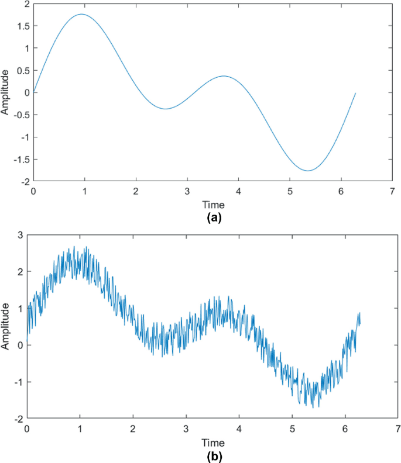
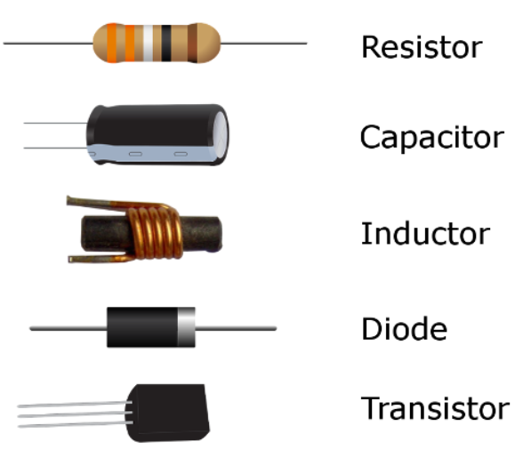

To understand analog electronics, the following must be understood:
Voltage (V) is the potential difference between two points, indicating the energy needed to move a charge.
Current (A) represents the flow of charges through a conductor.
Engineers design circuits to manipulate voltages and currents for specific applications without directly interacting with individual electrons...now -
What are analog signals?
Analog signals are continuous signals that vary smoothly over time and can take any value within a range.
Unlike digital signals, which take discrete values, analog signals can vary smoothly across an infinite range of values.
Key properties:
Amplitude: The height of the signal, representing the strength or intensity (like the volume in an audio signal).
Frequency: The rate at which the signal oscillates per second, measured in Hertz (Hz). Higher frequencies mean faster oscillations.
Phase: The relative position of the signal's wave cycle, especially important when dealing with overlapping signals.
When analog signals are transmitted or processed, they can pick up unwanted disturbances called noise
Types of Noise:
Thermal Noise: Generated by the random motion of electrons in resistors or semiconductors. This is unavoidable and increases with temperature.
Interference: Comes from other electronic devices or electromagnetic sources like radio waves.
Phase: The relative position of the signal's wave cycle, especially important when dealing with overlapping signals.
Noise reduces clarity and quality. In electronics, reducing or filtering noise is key for better signal transmission and processing.

Circuit Theory
Passive components: They store or dissipate energy without amplifying the signal.
Resistors impede(hinder) current.
Capacitors store energy in an electric field.
Inductors store energy in a magnetic field.
Active components: They can control current flow and amplify signals, essential for building amplifiers and digital circuits.
Diodes allows current to flow easily in one direction, but severely restricts current from flowing in the opposite direction.
Transistors regulates or controls current or voltage flow in addition to amplifying and generating these electrical signals and acting as a switch or gate for them.

Filtering
An electronic circuit called a filter circuit is made to either pass or block specific frequencies from an electrical signal. It is used through value of the cutoff frequency - the point in a frequency response at which the signal begins to be attenuated rather than fully passing through.
Notable examples include:
Low-pass filters attenuates signals higher than the cutoff frequency while permitting signals lower than the cutoff frequency to pass through.
High-pass filters attenuates signals with frequencies lower than the cutoff frequency while permitting signals with frequencies greater than the cutoff frequency to pass through.
Band-pass filters attenuates signals outside of the passband while permitting signals inside the passband to pass through.